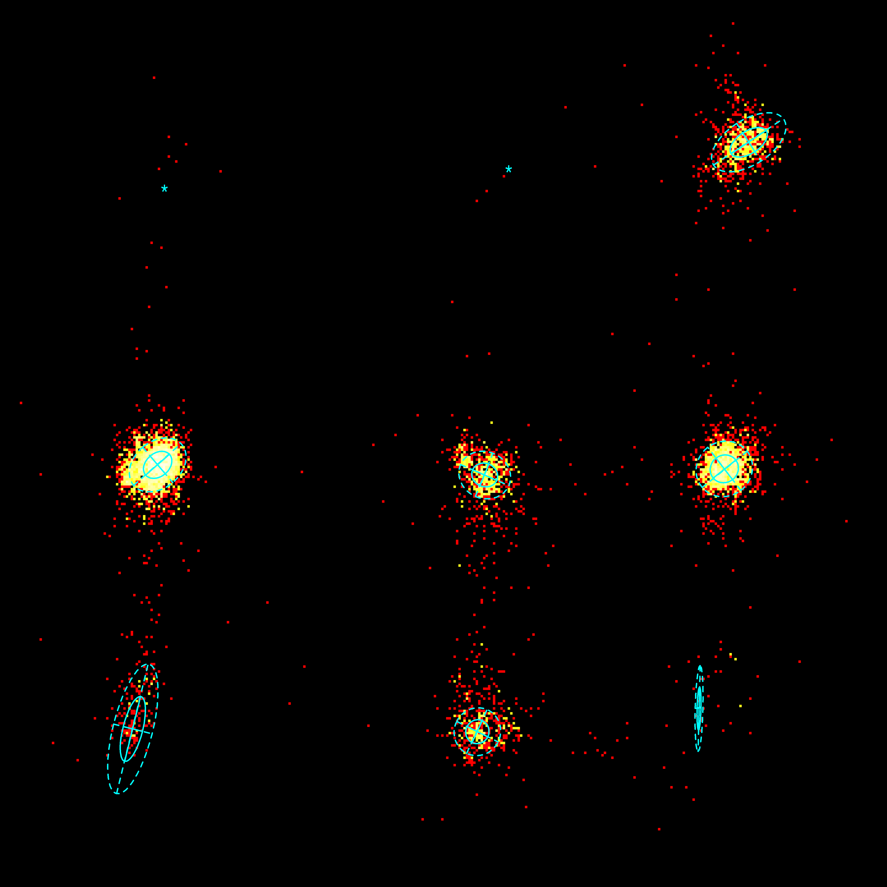
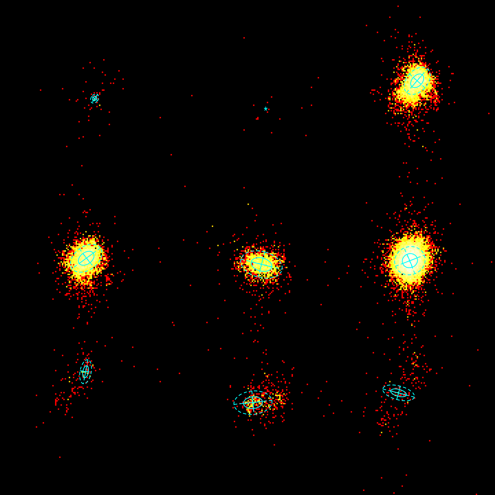
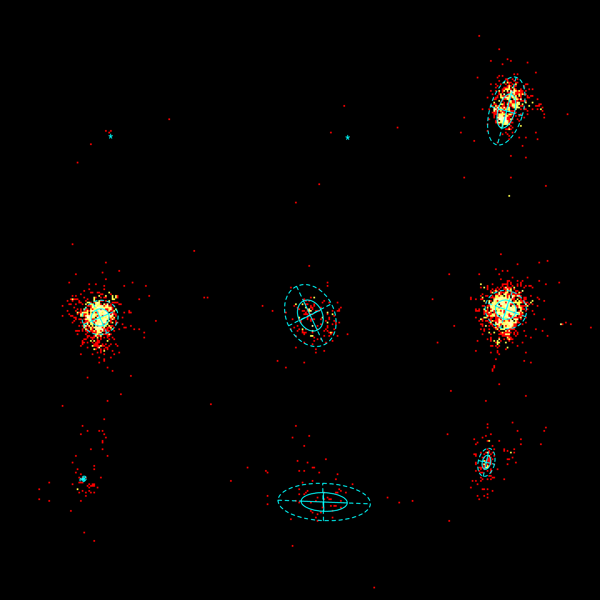

x-axis: χ1, [0,360]
y-axis: χ2, [0,360]
solid ellips: 1 standard deviation from the mean
dotted ellips: 2 standard deviations from the mean
'+': fitted mean when at least one standard deviation is greater than 120 degrees (see Table below)
'*': mean when there are less than 50 data points
φ-ψ of an α-helix
φ-ψ of a β-strand
other φ-ψ
| *mean values without fitted distribution, because counts<50. | |||||||
| φ-ψ-angles of: | Section | mean χ1 | mean χ2 | sd1 | sd2 | θ | counts |
|---|---|---|---|---|---|---|---|
| α-helix | 1 | 66.856* | 283.548* | - | - | - | 12 |
| α-helix | 2 | 206.512* | 291.387* | - | - | - | 4 |
| α-helix | 3 | 303.898 | 302.244 | 4.539 | 8.496 | -2.146 | 835 |
| α-helix | 4 | 64.011 | 171.319 | 4.703 | 6.399 | 4.009 | 3112 |
| α-helix | 5 | 196.74 | 167.192 | 5.336 | 4.728 | -2.729 | 792 |
| α-helix | 6 | 293.973 | 169.703 | 5.501 | 5.853 | 0.917 | 1767 |
| α-helix | 7 | 53.921 | 64.15 | 4.02 | 13.52 | 3.388 | 180 |
| α-helix | 8 | 193.765 | 63.026 | 4.685 | 4.89 | 3.602 | 509 |
| α-helix | 9 | 283.738 | 72.427 | 8.7 | 0.782 | 4.737 | 53 |
| β-strand | 1 | 68.814 | 288.333 | 1.293 | 1.808 | -5.68 | 58 |
| β-strand | 2 | 193.321* | 280.867* | - | - | - | 19 |
| β-strand | 3 | 303.435 | 301.215 | 3.776 | 5.726 | 3.875 | 4595 |
| β-strand | 4 | 62.71 | 172.164 | 6.351 | 4.233 | -0.63 | 4340 |
| β-strand | 5 | 190.153 | 167.614 | 4.735 | 7.687 | -1.315 | 1944 |
| β-strand | 6 | 298.111 | 170.405 | 5.609 | 5.069 | -3.51 | 12204 |
| β-strand | 7 | 62.274 | 89.636 | 4.437 | 2.02 | 4.899 | 139 |
| β-strand | 8 | 183.979 | 67.147 | 4.255 | 6.932 | -1.661 | 441 |
| β-strand | 9 | 289.879 | 74.278 | 2.507 | 5.926 | -4.448 | 204 |
| other | 1 | 66.431* | 278.152* | - | - | - | 6 |
| other | 2 | 208.644* | 277.45* | - | - | - | 4 |
| other | 3 | 303.805 | 293.397 | 4.966 | 10.537 | 0.284 | 669 |
| other | 4 | 60.085 | 169.541 | 5.443 | 5.082 | -3.548 | 1037 |
| other | 5 | 186.216 | 170.672 | 9.685 | 7.221 | -2.011 | 157 |
| other | 6 | 303.501 | 174.22 | 6.25 | 5.705 | 0.339 | 1329 |
| other | 7 | 49.907 | 72.566 | 0.728 | 1.039 | 0.959 | 59 |
| other | 8 | 194.521 | 58.791 | 13.852 | 5.581 | -3.102 | 63 |
| other | 9 | 291.857 | 82.595 | 2.472 | 4.27 | -2.917 | 128 |